作者：Liz潘
文章转载自公众号：憶平方E2studio
写在前头：
去年有一件事让我一直“耿耿于怀”。
我记得是春节过后，我在朋友圈无意中看到一篇文章，文章标题叫做“
85岁瑞典老太太用山西五寨话讲儿时在山西的回忆”。
五寨是我的家乡，出于好奇，我点了进去。
里面的视频让我惊呆了，那个85岁的瑞典老奶奶的五寨话说的比我还地道。
更让我惊愕的是，这个视频是一个跨越国界的祝福视频。
原来，哈娜1933年出生在五寨，她的父母是来华的瑞典宣教士。
哈娜在五寨度过了她的童年，在13岁的时候回到了瑞典（暂不知原因）。
后来，因为我奶奶也是一个基督徒，所以我随口问了她，没有想到她也认识哈娜。
原来，哈娜一直惦记着五寨和那里的弟兄姐妹，改革开放后还经常回去看望大家。
而这个视频的由来，正是因为她年纪已大，不方便回来，所以才录了视频祝福五寨和五寨的弟兄姐妹。
已关注 关注 重播 分享 赞 随便看看 --> 关闭观看更多更多退出全屏切换到竖屏全屏退出全屏六百击已关注分享视频，时长04:06
0/0
00:00/04:06 切换到横屏模式 继续播放进度条，百分之0播放00:00/04:0604:06倍速全屏
倍速播放中 0.5倍 0.75倍 1.0倍 1.5倍 2.0倍 超清 流畅
poster="http://mmbiz.qpic.cn/mmbiz_jpg/qJk0lCiblz3W3JFrkY33ZfyAb9YXVew5KdAXdicPGRibMgh0dFAvXu2rbIvib8YibEUO3c7r8nJOuhScb4H0AGUWD7w/0?wx_fmt=jpeg&wxfrom=16" webkit-playsinline="isiPhoneShowPlaysinline" playsinline="isiPhoneShowPlaysinline" preload="metadata" crossorigin="anonymous" controlslist="nodownload" class="" style="display: block; width: 677px; height: 508px;"> 您的浏览器不支持 video 标签 继续观看
被忽视、被屏蔽，艰辛的大多数，他们的故事在哪里？
观看更多转载,被忽视、被屏蔽，艰辛的大多数，他们的故事在哪里？六百击已关注分享点赞在看已同步到看一看写下你的评论
视频详情
这件事情让我五味杂陈，我既感动于哈娜对五寨的爱，更感慨于自己所受到的历史教育的贫瘠。
我起早贪黑，没日没夜的背历史书，竟然对自己家乡的历史一无所知。
我只是个满脑子偏见和空洞概念的糊涂虫。
事实上，这已经不是第一次让我有这样的感慨，此前从爷爷口中听到文噶的经历，从姥姥口中听到国民党和日本人的故事。
那些东西和我在历史课本上学到的根本就不一样，而亲身经历过那些历史的人都将渐渐老去。
我们的下一代将更可怜，更无知，因为他们没有真正的历史，也没有机会从老人的口中听到只言片语的真相。
有时候，我一想到这些，心里就隐隐作痛，恨不得抽自己一嘴巴，我tm学的是些什么玩意。
中国普罗大众所亲历的那些有血有肉的历史，谁来记录！
真的很遗憾，当我意识到这些事情的时候，我已经走上了为生活四处奔波的路子。
所以当我看到关于姜原来老师的纪录片时，我是非常激动的。
因为，姜老师解决的就是我心里的缺憾。
他经历过插队落户，经历过疯狂的时代，曾有着人人羡慕的工作，但却选择了勇敢和真实，选择和那些沉默的、无法发声的、不被重视的、被屏蔽的大多数站在一起。
他跋山涉水做了非常多的访问和调查，他并不是一种居高临下的姿态去俯瞰卑微的国人，而是和民工睡在一起，体验他们真实的劳苦和希望。
所以，姜原来老师的纪实性话剧是生命状态的自然流露，完全迥异于一般话剧作品的浮躁和字里行间的小资，他的作品是充满力量的，是宽广的。
同时，姜原来老师从信仰中汲取力量，在古典音乐的共鸣中寻求灵感，在母亲的注视和祈祷中，他在十平米的房子里完成了一部又一部话剧。
所以，就像姜老师评价贝多芬那样，他的作品里有着丰富的人性，但同时也有着丰富的神性。
这些作品既对中国社会问题着深刻的洞见和揭露，同时也在黑夜里点起了一座信仰之灯。
在这个“吃人“的国度里，姜原来和他的作品太珍贵，所以，我必须要转载这篇文章和姜原来老师的纪录片。
希望更多人可以看到这束摇曳在中国大地深处的光芒。
这里也感谢《十二》纪录片制作人Liz潘愿意授权，欢迎大家去看系列中其他作品，都很精彩。
以下为文章原文：
用影像和文字
在平方之地，去追去憶世界不同角落的
真，善，美！
憶平方👆值得您关注！
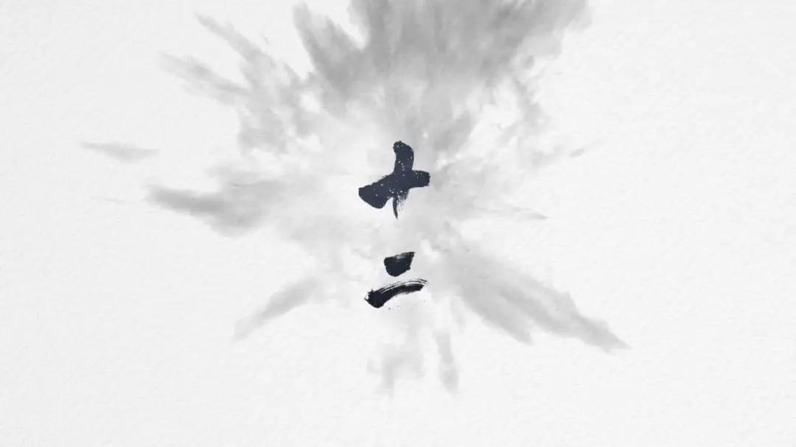
摆脱二元冲突的思维模式
抵挡消费主义的审美趣味
逃离世俗成功的行动逻辑
在随波逐流的人潮中逆流而行
反抗集体无意识的虚无
抵抗人的异化
向神学家求真
向艺术家求美
向行动家求善
点燃平凡而不平庸的生命
《十二》是一档深度访谈类纪录片。在两岸三地华人世界选十二位具代表性的人物，聆听Ta者的智性，感性与灵性世界，在此岸世界拼凑属于人性的真、善，美地图。在碎片化的时代，立志做一个整全的人。
独立纪录片制作人 | 潘蕾蕾
【十二】
第八集
在废墟上建造灵性家园的剧作家
——姜原来
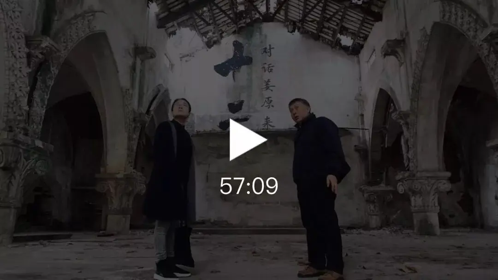
电脑版请点击文末“阅读原文”
手记
这一集从2019年夏天拍到了2019年冬天，可谓转战南北，先是八月在香港采访了当年《贝多芬在中国》的香港演出人员；十月去北京，现场抓拍了《贝多芬在中国》与《莎士比亚在嘉兴》在蓬蒿剧场的演出，采访了相关演员、作家与教授；十二月来到浙江嘉兴，记录了在教堂废墟中冉冉升起的艺术；最后回到上海一间十多平米的小屋，见证了一个打地铺剧作家——姜原来的炼成。于他，永恒的外婆与母亲引领着他不断上升。
1.
墨面基督叙事者
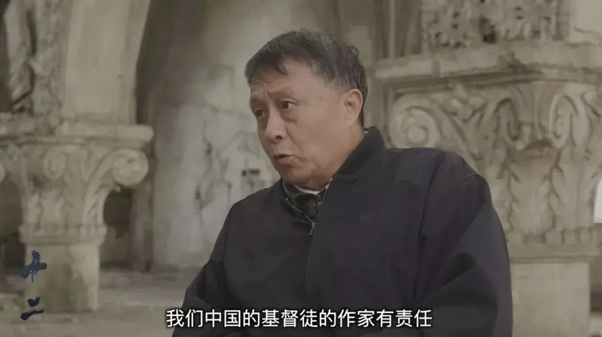
“午夜12:00过后，一群江南渔民在湖面上泛起几百艘小渔船，从里到外围成一圈圈同心圆，静寂无声。同心圆中央渔船上，神父点着灯盏为大家做弥撒。”
“1967年底，有一千两百多个基督徒要登上海拔一千多米的雁荡山顶聚会三天三夜，过平安夜，过圣诞节！”
这不是策展人精心设计的群体行为艺术，也不是挂在墙壁上供人欣赏的油画，更不是虚构的情节，而是真实发生在中华大地深处的信徒群像。姜原来透过江河湖荡的渔民与雁荡山林的村民的面孔，刻画出了中华大地上的基督面容——墨面基督。墨面出自鲁迅的诗句：
万家墨面没蒿莱，敢有歌吟动地哀。
心事浩茫连广宇，于无声处听惊雷。
一群由“没蒿莱”的“万家墨面”活在吃人社会里，坚守不吃人的底线，他们沉默、无言、无势、无财，却活出了基督的面容——墨面基督。
《神学美学》主编刘光耀教授如此评价：“但愿人们看到。他的戏剧太珍贵了！最难的创作是戏剧。一个缺少这样戏剧的时代是平庸、迟缓的，没有戏剧甚至是恐怖的。主与这位剧作家与他的戏剧同在。”
2.
戏剧创作与中华大地神学
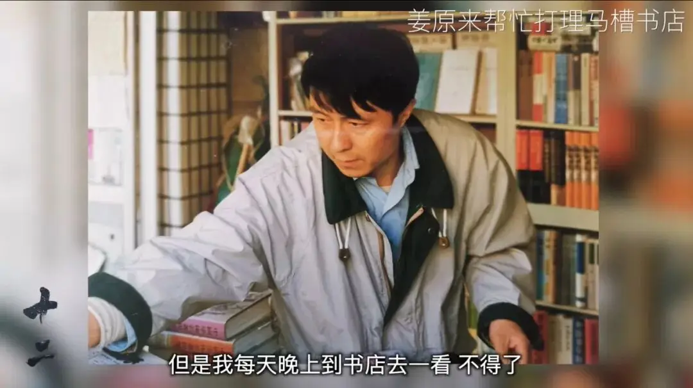
九十年代末在上海马槽文化沙龙诞生的话剧《贝多芬在中国》，于新千年之后先在上海公演，媒体争相报道引起了不小的轰动，继而2002年搬上香港话剧舞台，时隔多年，2019年在民间戏剧节中以排名第一的投票成绩登上北京蓬蒿剧场，再次掀起了一股小浪潮。朴实无华的民间剧场，上百位观众挨个坐在小板凳上，一群自由的灵魂，在黑暗中欣喜地等待拨开云雾之后的华章。
贝多芬音乐响起，在人性善恶之间穿梭，在中西之争中流动，在叩问灵魂中升华。魂游于中国广袤大地上的贝多芬，在广州目睹了鸦片之殇，在沈阳目睹了日寇侵华之耻，在上海目睹了“红色”之荒诞。180年纵深历史，人为酿造的灾难，我们看到的是外来入侵之恶还是内部相残之恶？答案只有一个：人性之恶。与其说历经苦难的民族需要救赎，倒不如说人性需要救赎。贝多芬的《庄严弥撒》留作终曲成为盼望，净化人类罪恶的心灵。
如果把《贝多芬在中国》与2004年完成的《莎士比亚在嘉兴》当作在中西文化交流历史中探索永恒真理的创作起点，那么接下来两部剧《兰林复活节》和《雁荡平安夜》，姜原来直接进入信仰群体内部，从最底层入手，以戏剧为题材，从知识分子的视角来叙述社会的冷峻现实对温存朴素的信仰群体的挑战。两套相左的价值体系在剧作中来回摆荡：贫穷与富裕、失败与成功、苦难与幸福、反抗与妥协、牺牲与自利、生命与死亡等等。
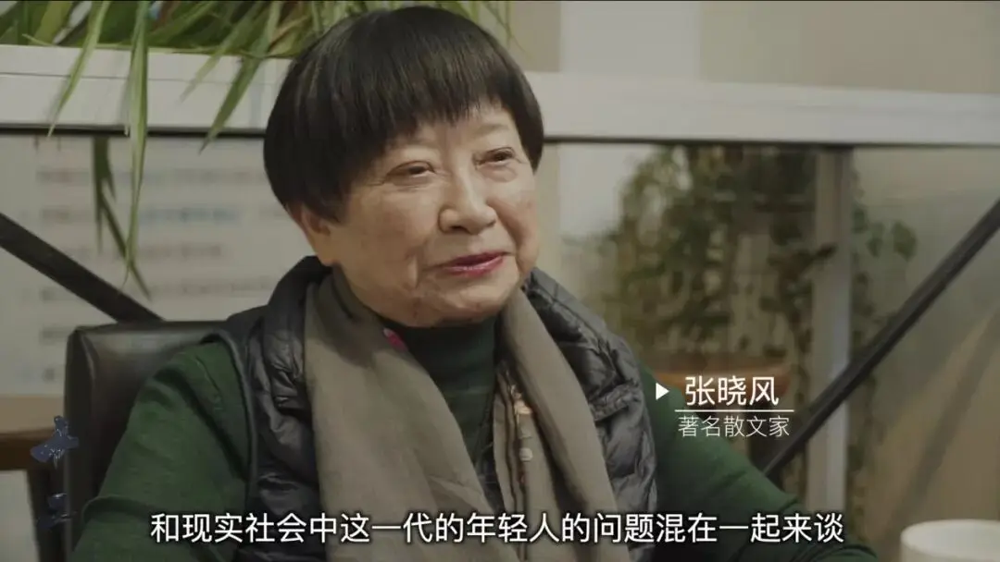
《兰林复活节》里，姜原来通过一位牧养兰林团契（天主教、东正教、新教的共融团契）、实践“不吃人神学”的裴牧师，揭示了江南渔民的生存条件的残酷现实：“都说最底层是农民，其实，从江南到这一代最底层的是江河湖荡的渔民，十几万内湖渔民世世代代以船为家，甚至岸上的农民都瞧不起他们，因为他们连岸上固定的家都没有。这些渔民世世代代捕捞鱼虾为生，没法上岸读书，所以他们自古以来全体文盲。”他们没知识、没文化、没财产，但他们有良知，在主流的“吃人”社会里恪守着“不吃人”的道德底线。在外来郭牧师引进的那一套“幸福神学”的游说下，他们持守“牺牲神学”的立场；在北美华裔商人的威逼利诱与大肆欺骗之下，他们选择了爱与饶恕。
“如果说当代亚洲神学通过印度的种姓神学、中国台湾的水牛神学、韩国的民众神学在本色上有所创新，那么《兰林复活节》则另辟蹊径，在文学创作——戏剧文学中现身了一种本色神学。”这是复旦大学刘平教授对《兰林复活节》的高度评价。
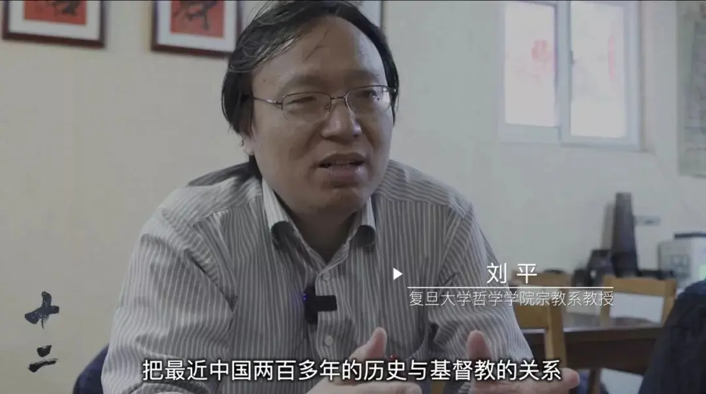
《雁荡平安夜》述说了这样一个故事，67年，城中一名五十多岁的历史老师孔丙辰落难，在平安夜逃到了雁荡山遇到了林阿婆，农村教会负责人，这个信仰群体全然接纳了他，帮他度过了不平安的时刻。林阿婆对他说：“老师，有了主，我们才——再不会‘心里痛、心里碎、无处讲、无处医’了。”二十六七岁的农夫，聪明又犀利的薛云对孔丙辰说：“我是个乡下人，可我也喜欢看看鲁迅的书。要是没有主，我们不都是孤魂野鬼的祥林嫂、闰土、阿Q吗？！孔老师，我讲一句公道话你不要听了不高兴，我看要不是主的奇妙安排，你……你也要变成孔乙己！”平安夜那晚，孔丙辰大开眼界：“外头搞运动，亲兄弟姐妹都分成了几派相斗，你们这人才是名副其实的兄弟姐妹啊！没想到，我在这深山老林大开眼界，大开眼界啊！要不是我亲身经历，打死我都不会相信，67年底，有一千两百多个基督徒要登上海拔一千多米的雁荡山顶聚会三天三夜，过平安夜，过圣诞节！啊呀！啊呀！”这个信仰群体对自身的爱与委身，再一次通过薛云说出了心底话：“走遍全世界后，我还是要回来的，世界上再好的地方，也留不住我，我一定要回到雁荡山，回到这家乡！”
读姜原来的剧本，不可能不被质朴的情感打动，在剧本里，他以知识分子的身份融入到这些群体，没有居高临下来观察描写他们，反倒是把自己作为反思对象来接受底层信徒对他的灵魂洗礼。听他的个人故事，很难想象一个地道上海城里人竟甘愿自我放逐到各地基层，长期与江南渔民、农夫、村民、矿工为伴。
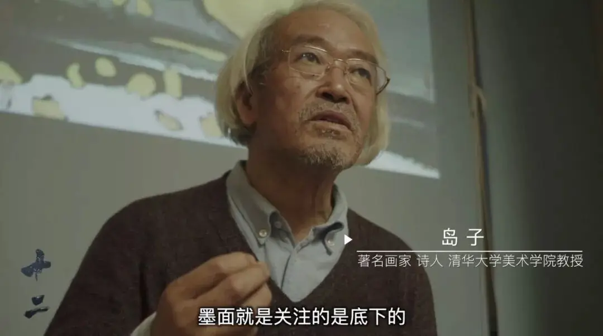
虽然他的每一部剧都是以古典音乐为铺垫，但他绝不是邀你花前月下谈风花雪月，而是以饱满的激情与昂扬的斗志为深埋于中华大地深处的苦难群体发出阵阵悲鸣。那一条被遮蔽的轨迹正若隐若现于历史长空中，让人心疼，为之哀戚。姜原来打破了古典音乐、文学、神学与劳苦大众之间的隔阂，用心捧起被主流遗忘却始终恪守信仰道德的人们的脸庞，尽他全力用文字记下了每一个不该被遗忘的名字。因为一个名字就是一个生命啊！
"神学与亚洲文化"国际知名教授C.S.Song（1929-）在上世纪八十年代写的《第三眼神学》中就提出神学与生命紧密相连，他说：“上帝的心疼是神学的开端。神学的开端与完成，在于上帝以他的心疼回应人类的苦难。神学若不能反映人类心灵的悲痛就不算是真正的神学。
与基督教神学更有关系的是人的生命而不是正确的信条：神学的首要任务也不在于证明以及辩护基督教的教义是具有普遍性的，而是在于使得基督徒能够开放心灵去体会上帝如何在不同时间、不同地点、对不同的人、以不同的方式进行他的工作。除非我们倾听他们的故事，除非他们的故事成为我们的故事，除非我们在他们的故事中看到我们自己，否则我们基督徒不能声称我们知道上帝对亚洲人民要求是什么。倾听，仔细地、深刻地神学地听亚洲人民从心灵深处所发出的低语、高歌、呻吟、呐喊，成为我们在亚洲做基督教神学不能或缺的条件。
基督教神学的出发点必须是我们的文化天地，而不是神学造成的普世而抽象飘渺的天空。神学工作发生于个人或社会面临困难抉择的时候。当必须作价值判断时、当是非善恶的选择无可逃避时，正是做神学的时刻。”
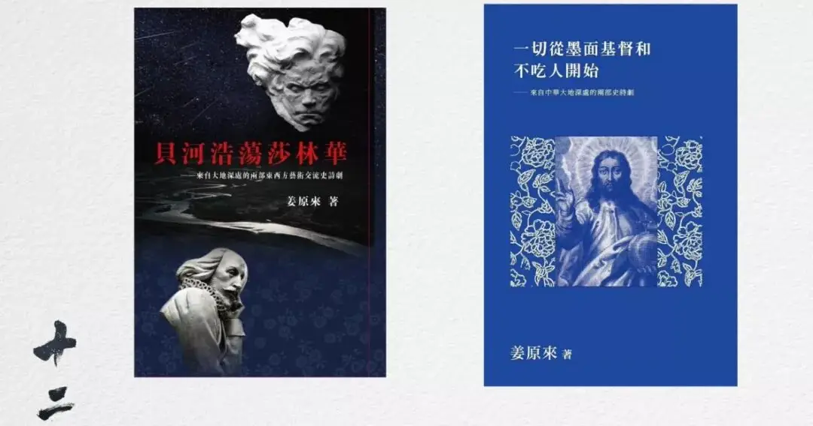
姜原来是这个时代做本土神学的先锋人物，他采用叙事（故事）神学的进路，根植于鲁迅对中国传统文化的批判传统，发出了九百六十万平方公里中华大地上信仰群体自己的微弱声音，这是属于中国信徒内心深处独一无二的信仰告白，这是扎根于中华大地的本色神学。《一切从墨面基督和不吃人开始——来自中华大地深处的两部史诗剧》的神学性高过它的文学性，作为文学作品，它留给读者的想象空间略微狭窄，因为作者把该说的话都说尽了。姜原来的剧作更能激起读者对信仰的深刻反思，探索并回应信仰在不同时期、不同处境中所产生的不同的问题。
3.
永恒女性引领他上升
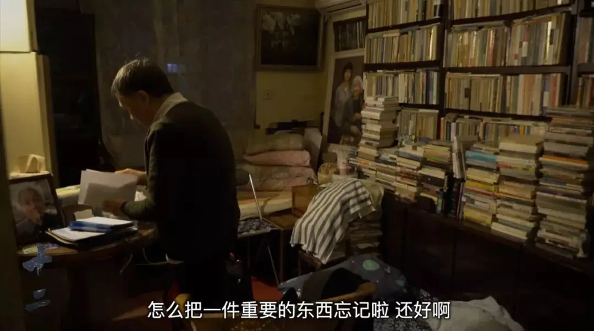
2014年母亲被接回天家，姜原来一生中最亲密的人际纽带忽然被剪断了，他整个人崩塌了。前半生不轻易掉下任何一滴泪珠，却在每一个思念母亲的夜晚嚎啕大哭，泪腺如决了堤的坝，在两颊挂下了壮观的瀑布。年轻时被分到黑龙江“狼比人多”的偏僻乡村三年多，在那里经历了各种“吃人”故事，他没喊过苦，没说过痛，再多的磨难，他都不曾流过泪。
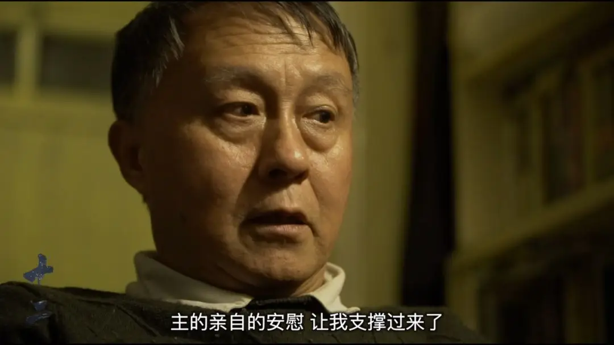
正如他女儿姜林静所言：“他那么喜欢音乐，我奶奶过世之后，家里的音箱被他关了，他听不进去音乐。无论他在社会上有过怎样的失败经历，他始终是母亲心中最亲爱的儿子。”这爱是他一切行动的源泉。在纪录片里，女儿与父亲间的相亲相爱，以及对彼此批判的回应，令我动容，这是懂得爱，且具有深层爱的能力的真实一家人。也许姜原来从未想过他将会留给女儿最大的遗产是什么？姜林静在纪录片中的回答超越了一切世俗的标准。
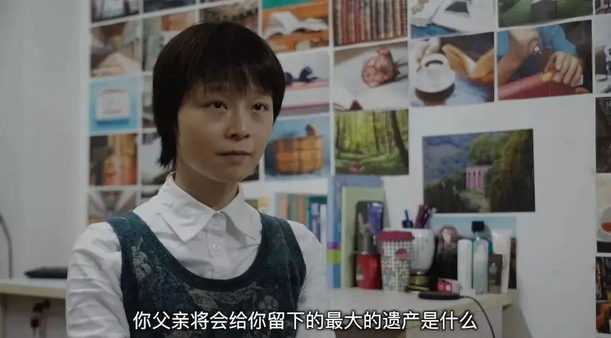
听妈妈话的姜原来报考大学时放弃了文科，学了理工科，对于在特殊时期饱受苦难的歌唱家母亲而言，文科无出路。大学毕业后长期在机关研究所从事风景区、自然保护区环境规划和野外环境科研等工作。最终，还是抵不过基因的作用与家庭文化的熏陶，在自己有能力选择的时候，选择了信仰与人文艺术相结合的道路，并且为此付上巨大的经济代价。
上世纪八十年代成为基督徒，九十年代初进入民间基督教文化领域，停薪留职，人生轨迹发生改变。先是协助母亲创办微型书店“马槽书店”，多年主持“上海马槽文化沙龙”；同时发起“走进历史现场”的考察学习活动；二十多年来，一如既往地坚持在基层神学院讲“文化与基督”这门课程。
他曾把母亲的骨灰盒放入行李箱，推着它行走在中华大地上，寸步不离。这样的姜原来，在我心中是一位十足的行为艺术家。
在访谈中，我问姜老师：“您一直在写人的故事，您觉得什么样的人最美？”他以阿婆和妈妈为例，他说她们那样的最美！
2019年9月，姜原来另一本著作《贝河浩荡莎林华——来自大地深处的两部东西方艺术交流史诗剧》在台湾出版。他将这本书献给了他亲爱的外婆。
谢谢阿婆——
我的第一位真正的老师。
夜深人静时无数次跟着你，
从常熟练塘沈家浜到苏州老街萧家巷、
从上海香山路王家浜到静安老区康定路
在这条你一生走过的旧江南老上海路上
一遍遍重新受教：
经腥风血雨之时仍然恪守白心、
陷人魔人牲之地依旧清醒悲悯。
永远不用“想起”，从来不曾忘记。
谨以此书纪念外婆
2020年1月初于上海
潘蕾蕾
欢迎大家去逛逛！
这里没有挑逗你眼目情欲的小鲜肉
也没有挑动你肉体情欲的段子
更没有膨胀你今生骄傲的鸡血
我们只在乎那些最质朴真诚的作品
在那里我们才能恢复真正的想象力
我们也坚信这才是我们真正需要的

ID:Six_hundred_hits
长按二维码，一键关注
【六百击】